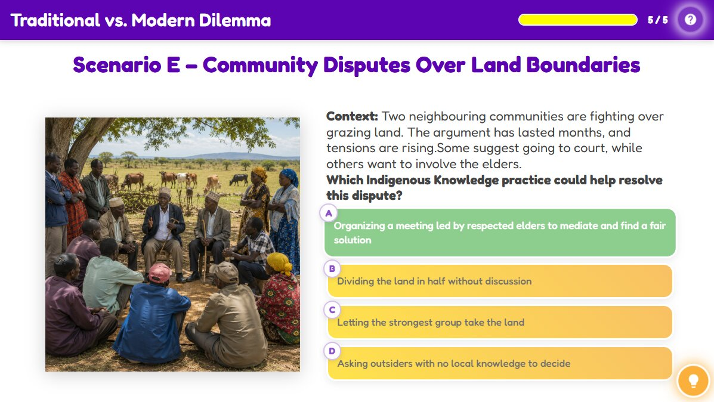

Traditional vs. Modern Dilemma
Traditional vs. Modern Dilemma
Activity Conclusion

Lesson Complete
Key Takeaways
| Aspect | Detail |
|---|---|
| Agriculture | Organic compost and natural pest control methods like neem protect soil, crops, and water sources. |
| Conservation | Sacred trees and forests are protected through spiritual beliefs, taboos, and traditional rules. |
| Water Management | Sand dams and rock catchments are low-cost, community-built methods to sustainably store rainwater. |
| Resource Renewal | Traditional no-fishing periods allow fish to breed and replenish stocks for future generations. |
| Dispute Resolution | Elders use customary law and dialogue to reach peaceful agreements and keep harmony. |
Activity Introduction
Modern problems may seem new, but Indigenous communities have faced similar challenges and developed wise, lasting solutions. In this activity, you will explore real-life situations and choose the Indigenous Knowledge practice that best fits. Think like an elder. Act like a guardian of the land.
Learner Instructions
- Read each real-life scenario carefully.
- Look at the four answer choices, each is a possible solution.
- Choose the Indigenous Knowledge practice that best addresses the problem in the scenario.
- If you get it wrong, read the feedback and think about why another choice might work better.
- Continue until you have completed all scenarios.
- Aim to choose the most sustainable, culturally respectful solutions for each situation.